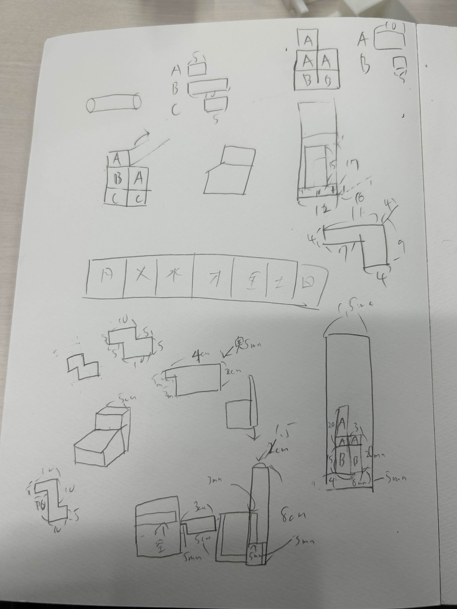
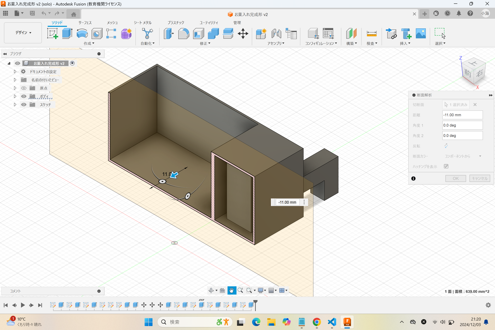

Design for Others
自分が取り組むことにした問題の説明
今回は自分たちの班で出た問題に解決するためのプロセスが思い浮かばなかったので、「祖母が認知症で毎日飲む薬を忘れてしまう」という問題に取り組みました。
使用機材は3Dプリンターです。
「無限連結くん」

今回は同じ構造で連結できる入れ物を作りました。
右についているでっぱりを左についている凹みにうまくはめ込むことで連結、固定できます。
↓連結した姿
↓実際に連結している動画
↓使用例(毎日の薬を忘れない用)(印刷時間の問題で木曜までしかない)

↓スケッチ(ほぼ設計図)

↓こだわり(内部を空洞にしてフィラメントと印刷時間の削減をしており、また、フィラメントが垂れるのを防止するために柱を設けている)

他の班員のサイト
みつをの部屋 あべべさん はんなさん 拓海さんボツ案
↓0円玉